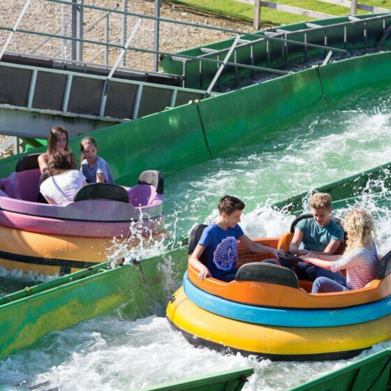

Height Requirement
1m - 1.4m*
Price
£4.00
Status
Loading...
Wait Time
-
Included with Any Wristband
About this Ride
Wild River Rapids joined the park in 2022 after an interesting history. This Reverchon spinning raft ride was purchased by the Mellors Group in 2004 and previously toured fairs like Nottingham Goose Fair before operating at Lightwater Valley from 2009 to 2020. After time in storage, it was revived at Fantasy Island to provide guests with an exciting water adventure during warmer months.
*Riders between 1m and 1.4m must be accompanied by an adult